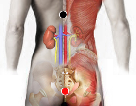

Leptospira
Pares
suprarrenal - recto
clítoris- suprapúbico

Generalidades:
Parecida a la Sarna, Problemas de tipo digestivo, vías aereas y mucosas. Gases rectales (sindrome de la motocicleta).
Presenta el fenómeno de comportamiento bipolar.
La Leptospirosis es la infección causada por Leptospira que se presenta con: fiebre, vómito, diarrea, nausea, tos seca, dolor de cabeza, dolor muscular, escalofíos. Otros síntomas menos comunes pueden ser: dolor abdominal, conjuntivitis, rigidez muscular, dolores en músculos, huesos o articulaciones, espelnomegalia, hepatomegalia, inflamación de los ganglios linfáticos, insuficiencia renal, hemorragias, meningitis, erupción cutanea.
Transmisión
Se trasmite por agua contaminada con orina de animales o por animales : mamíferos, reptiles, anfibios, etcétera.